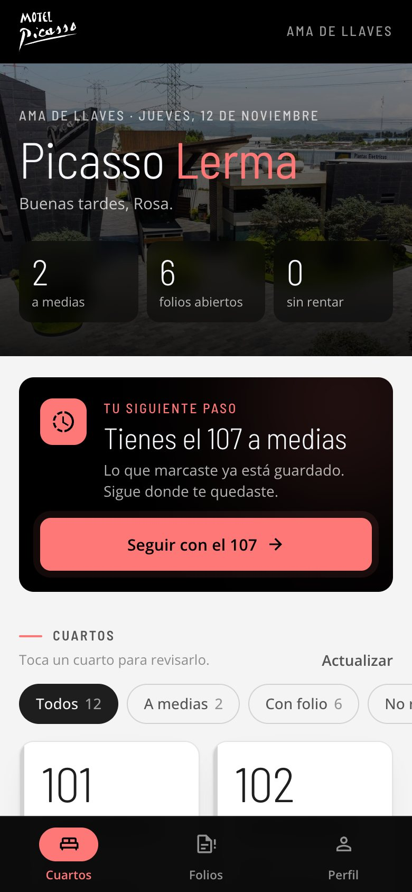
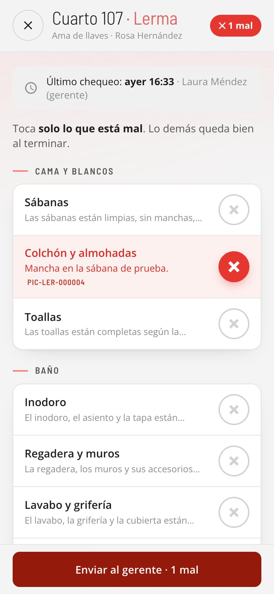
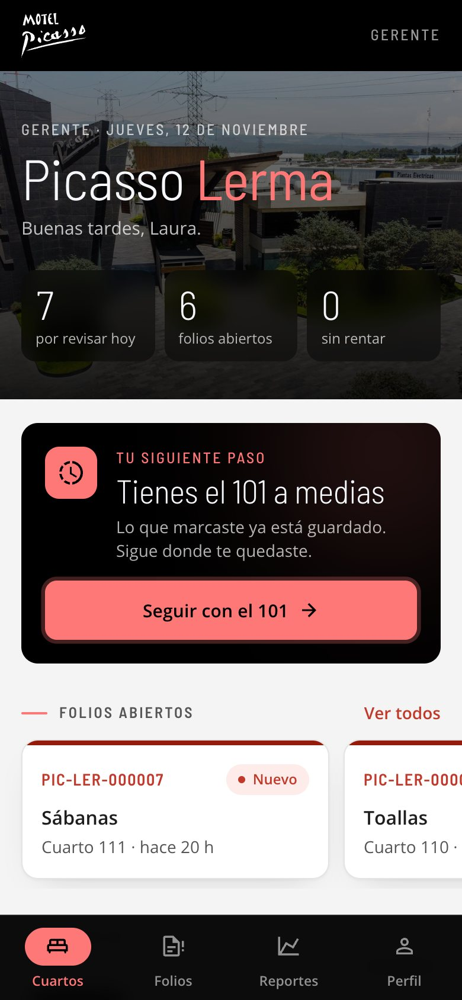
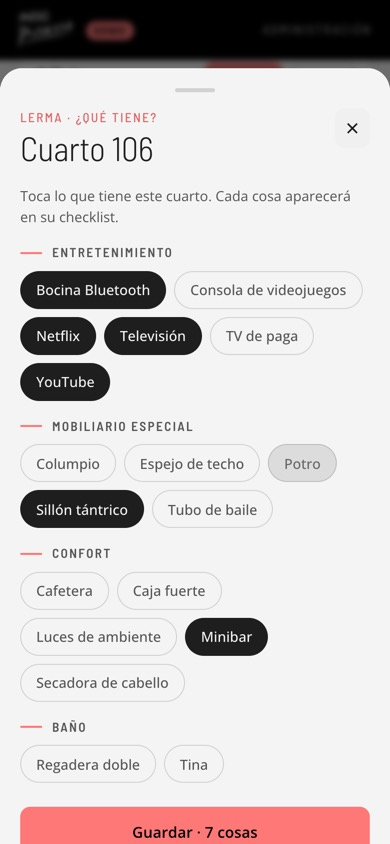

Cada cuarto revisado, cada falla con dueño
Picasso es la app con la que el personal de las seis sucursales revisa cada cuarto desde el celular, documenta con foto lo que está mal y le da seguimiento hasta cerrarlo. Los propietarios ven las seis sucursales en un solo panel, con sus ingresos y gastos. Sigue al pie de la letra el documento de la dirección Reportes de Mantenimiento y Limpieza.
El problema
Con seis sucursales, revisar en papel o por mensajes deja huecos difíciles de ver desde la dirección. La app los cierra así:
Lo que ya está hecho
Con cuartos, equipo y personal reales. Al cierre del piloto se decide, con indicadores, si pasa a las seis sucursales (secciones 04 y 05).
Estado al 12 de noviembre de 2026: la app está completa para un piloto y corre con datos de ejemplo. Lo que falta comprobar está en la sección 07.
Lo que gana cada puesto
Cada puesto entra a lo suyo y solo ve su sucursal; los permisos se revisan en el servidor, no solo en la pantalla. Las capturas son de la app real con datos de ejemplo.
Desde el navegador, en iPhone y Android, sin pasar por tiendas ni esperar aprobaciones.
Lo marcado se guarda en el teléfono y se sube solo al volver la conexión.
Fotos privadas con ligas que caducan en 2 horas; bloqueo de 15 minutos tras 5 intentos fallidos.
Ama de llaves
cada cuarto se revisa después de cada limpieza, y lo que falla llega al gerente con foto.
- Ve sus cuartos con su estado y la hora del último chequeo; «Tu siguiente paso» le dice qué toca.
- Checklist de 29 puntos del documento (A01–A29) más el equipo de ese cuarto.
- Toca solo lo que está mal: escribe qué pasa y toma la foto. Se abre un folio o se liga al que ya estaba abierto por la misma falla.
- Lo que no aplica (jacuzzi, alberca, sauna o terraza que el cuarto no tiene) se marca solo, con su motivo.
- «Enviar al gerente». Si no marcó nada, la app le pide confirmar que todo está bien.
- Sin señal sigue trabajando: lo marcado se guarda en el teléfono y se sube solo.


Gerente
ninguna falla se queda sin dueño, y la renta se decide con evidencia.
- «Tu siguiente paso»: cuartos que envió la ama, folios nuevos o cuartos por revisar hoy.
- Su propio checklist de 25 puntos (G01–G25), con la frecuencia que fije la sucursal.
- Decide si el cuarto puede rentarse, con motivo, por separado del folio.
- En cada folio pone prioridad, quién lo atiende y anota avances.
- Solo el gerente cierra, con la foto de la reparación y lo que se corrigió. Si no quedó bien, sigue abierto.
- Expediente de cada cuarto con su historial, y PDF del cuarto y del folio.

Propietarios
las seis sucursales en una sola vista, comparadas con los mismos indicadores.
- Periodo a elegir: hoy, ayer y hoy, 7 o 30 días.
- Folios de las seis sucursales con filtros por estado, sucursal, fecha o texto; cada uno abre su expediente completo.
- Reportes: cumplimiento, conformidad, tiempo de solución, reincidencias y fallas frecuentes, con el PDF del periodo.
- Consulta sin poder modificar lo que hace el personal.
Las cifras de las capturas son datos de ejemplo de la demo, no de Picasso.
Administración
la app se ajusta a cada sucursal sin programar.
- Alta de cuartos por sucursal y qué tiene cada uno (jacuzzi, alberca, sauna, terraza).
- Equipo del cuarto (Netflix, minibar, sillón…) desde un catálogo propio; entra solo al checklist.
- Alta del personal con su puesto y sucursal.
- Tres reglas por sucursal que el documento deja abiertas: frecuencia del gerente (diaria, cada 2 o 3 días), cómo contar a la ama (por limpieza o por cuarto al día) y tipo de checklist (solo lo que está mal, o cada punto).

Finanzas
lo que entra y lo que sale de cada sucursal, en el mismo lugar y listo para la contadora.
- Ingresos leídos cada noche del Kairos de cada motel: rentas, cuartos, room service y extras, por día y por tarifa.
- Gastos registrados por el gerente cosa por cosa (artículo, cantidad y precio), con foto, PDF o XML de la factura. «Verdulería» o «varios» no se aceptan.
- Cada gasto se carga a uno o varios folios de mantenimiento: se sabe cuánto costó cada reparación.
- Auditoría: quién gasta más, en qué y el mismo artículo comprado a precios distintos.
- Excel y XML para E-Cont, y reporte PDF de ingresos contra gastos por rango de fechas.

Indicadores que ya salen de la app
El éxito se mide con lo que el personal ya registra al trabajar, sin capturas aparte. Las metas son una propuesta de CometaX: se fijan con la dirección al terminar las dos primeras semanas del piloto, cuando haya una línea base real.
| Indicador | Qué responde | Dónde se ve hoy | Meta propuesta |
|---|---|---|---|
| Cumplimiento de revisión | ¿Se revisó lo que tocaba? Completas entre exigibles, por puesto y según la frecuencia de cada sucursal. | Ya Panel y Reportes | Gerente 95 % o más; ama de llaves 90 % o más. |
| Conformidad de puntos | ¿Qué tan bien están los cuartos? Bien entre (Bien + Falla). | Ya Reportes | Fijarla con la línea base del piloto y subirla mes con mes. |
| Folios abiertos y el más antiguo | ¿Qué sigue pendiente y desde cuándo? | Ya Panel, inicio del gerente y Reportes | Ninguno con más de 7 días sin avance. |
| Tiempo de solución | ¿Cuánto se tarda en arreglar? Horas promedio de la apertura al cierre. | Ya Reportes, por sucursal | Promedio de 48 horas o menos. |
| Reincidencia | ¿Se arregló de verdad? La misma falla en el mismo cuarto dos o más veces en el periodo, con sus folios. | Ya Reportes | A la baja mes con mes; cada reincidencia con su causa revisada. |
| Fallas frecuentes | ¿Dónde conviene invertir? Los puntos del checklist y el equipo que más fallan. | Ya Reportes | Sin meta: guía compras y mantenimiento preventivo. |
| Cuartos que no pueden rentarse | ¿Cuántos cuartos están detenidos ahora? | Ya Panel | Cada uno con su folio en atención el mismo día. |
Los reportes se piden por periodo (hoy, 7, 30 o 90 días) y salen también en PDF con la marca de Picasso.
Lo que habría que construir
La app no da hoy estas medidas. Se propone sumarlas a la fase 4 si la dirección las pide:
| Medida | Para qué | Estado |
|---|---|---|
| Tendencia mes contra mes | Ver si cada sucursal mejora; hoy se elige un periodo, pero no se compara con el anterior. | Por construir |
| Tiempo de solución por prioridad | Exigir más rapidez a lo urgente; hoy el promedio junta todas las prioridades. | Por construir |
| Horas de cuarto fuera de renta | Traducir las fallas a tiempo de venta detenido. Las decisiones ya se guardan con fecha; falta sumarlas. | Por construir |
| Uso por persona | Medir la adopción durante el piloto, persona por persona. | Por construir |
| Costo de reparaciones | Saber cuánto cuesta cada falla. La app no registra costos. | Por construir |
Beneficios que se esperan, sin medir todavía. Menos tiempo por revisión, porque solo se toca lo que falla (supuesto: en un cuarto revisado la mayoría de los puntos están bien); menos fallas que se pierden entre turnos, porque cada una queda en un folio con dueño; y menos fallas repetidas, porque la reincidencia queda a la vista. Se comprueban con los indicadores de arriba durante el piloto.
De una sucursal a las seis
Un piloto corto en una sucursal prueba la app con personas, cuartos y señal reales antes de llevarla a las seis. Las semanas son una propuesta; las fechas se acuerdan con la dirección.
Qué sucursal elegir
La elige la dirección. Ayuda que tenga buena señal o wifi en los pasillos, un gerente dispuesto a usarla todos los días y suficientes cuartos para ver de todo (fallas, cuartos detenidos, reincidencias). No hace falta que sea la más fácil: lo que se aprenda ahí ahorra problemas en las otras cinco.
Semana por semana
- Fase 1: servidor, dominio y respaldos.
- Cuartos, equipo y personal reales de la sucursal.
- Confirmar las tres reglas con la dirección.
- Una sesión corta por puesto, con su propio teléfono.
- Instalar la app en cada teléfono.
- Correr la lista de QA en los teléfonos del personal.
- Uso diario completo.
- Primer corte de indicadores.
- Ajustar reglas si algo no cuadra con la operación.
- Fijar las metas con la línea base.
- Corregir lo que reporte el personal.
- Revisar folios viejos y reincidencias.
- Revisión de indicadores con la dirección.
- Ir o no ir a las seis sucursales.
- Plan de alta de las otras cinco.
Capacitación por puesto
| Puesto | Qué aprende | Cómo |
|---|---|---|
| Ama de llaves | Instalar la app, revisar un cuarto tocando solo lo que falla, tomar la foto y enviar al gerente; qué pasa sin señal. | En un cuarto real, con su teléfono, y el manual de su puesto. |
| Gerente | Lo anterior más «Tu siguiente paso», su checklist de 25 puntos, decidir la renta, atender y cerrar folios con foto. | Un folio de práctica de principio a fin. |
| Propietarios | Leer el panel, abrir un expediente y bajar los reportes del periodo. | Sesión con los datos del piloto. |
| Administración | Dar de alta cuartos, equipo y personal; cambiar las reglas de la sucursal; entregar contraseñas. | Alta de la sucursal piloto junto con CometaX. |
Criterios para pasar a las seis sucursales
- Cumplimiento de revisión en la meta acordada dos semanas seguidas.
- Todas las fallas de la sucursal se reportan en la app, no por fuera.
- Ningún folio cerrado sin foto de la reparación.
- El personal la usa sin ayuda de CometaX.
- Lista de QA sin casos en Falla que bloqueen el trabajo.
- Respaldo de la base restaurado con éxito al menos una vez.
Riesgos a vigilar
| Riesgo | Qué puede pasar | Cómo se cuida |
|---|---|---|
| Adopción del personal | Que se siga avisando por fuera y la app quede a medias. | Checklist de «solo lo que está mal», «Tu siguiente paso» y ayuda de primera vez; el cumplimiento delata el abandono desde la primera semana. |
| Señal | Pasillos o cuartos sin cobertura. | Lo marcado se guarda y se sube solo. Revisar la señal o el wifi de la sucursal antes de arrancar. |
| Fotos | Las fotos no entran a la cola sin señal; un teléfono puede negar la cámara. | Tomarlas con conexión; probar la cámara de cada teléfono con la lista de QA. |
| Cuentas | Contraseñas olvidadas o cuentas bloqueadas tras 5 intentos. | La administración las entrega en persona y las cambia; la recuperación por correo está en la fase 4. |
| Reglas | Que la frecuencia del gerente o el conteo de la ama no cuadren con la operación. | Son interruptores por sucursal: se cambian desde Ajustes sin programar. |
Lo que hace falta de Picasso para arrancar
- La sucursal piloto y quién la coordina.
- Las tres reglas: frecuencia del gerente, cómo contar a la ama y tipo de checklist.
- Quién dará de alta cuartos y personal (administración).
- Lista de cuartos de la sucursal, con jacuzzi, alberca, sauna o terraza.
- El equipo de cada cuarto y el personal con su puesto y correo.
- Dominio para la app (por ejemplo, inspecciones.motelpicasso.mx) y los teléfonos del personal.
Crecer por fases, cuando haga falta
Son las fases de la documentación técnica. Cada una se apoya en la anterior y ninguna obliga a rehacer lo que ya funciona. La regla para crecer es simple: solo cuando una medición lo pida.
| Fase | Qué gana Picasso | De qué depende | Tamaño |
|---|---|---|---|
| 1 · Antes de producción | La app en su propio dominio con HTTPS, respaldos diarios fuera del servidor y secretos propios: lista para datos reales. | Servidor y dominio, acceso al DNS y repositorio del código. | S |
| 2 · Piloto en una sucursal | La prueba con personas y cuartos reales, las reglas confirmadas y la línea base de los indicadores. | Fase 1; cuartos, equipo y personal de la sucursal; decisión de la dirección sobre las reglas; teléfonos del personal. | M |
| 3 · Las seis sucursales | Toda la operación en un panel y las sucursales comparadas con los mismos indicadores. | Piloto aprobado; datos de las otras cinco sucursales; capacitación; foto de Vaqueritos. | M |
| 4 · Avisos al gerente | El gerente se entera en cuanto la ama envía un cuarto con fallas, sin entrar a buscarlo. | La cola de trabajos ya está en la app; falta el aviso. | S–M |
| 4 · Fotos en la cola sin señal | La foto tampoco se pierde sin señal: se sube sola al volver la conexión. | Hoy solo los puntos se guardan sin señal. | M |
| 4 · Contraseña por correo | Cada persona recupera su acceso sin pedirlo a la administración. | Correo de salida con dominio verificado. | S–M |
| 4 · App de tienda | App en App Store y Google Play, si se necesita cámara sin galería o avisos en iPhone sin instalar. | Solo si la PWA se queda corta; se envuelve el mismo front con Capacitor. | M–L |
Tamaño relativo, sin montos. S: ajuste acotado. M: cambio de varias pantallas o un módulo. L: producto nuevo.
Más adelante, cuando una medición lo pida
Escalones sin reescribir
Hoy un servidor de 2 a 4 vCPU sobra: con 180 cuartos se esperan unas 720 revisiones al día, menos de una petición por segundo. Si crece, primero un servidor más grande; después, varias copias de la API con las fotos en S3; y al final, una base de datos administrada. Los dos primeros escalones son de configuración, no de código. S–M
App para los clientes del motel
Por ejemplo, el QR de quejas y sugerencias que ya pide el checklist: el huésped escanea el QR del cuarto y su queja podría abrir un folio con historial. Entraría como un módulo nuevo con sus propios permisos, sin tocar la app del personal. L
Que siga funcionando y mejore cada mes
Una app de operación diaria necesita cuidado después del lanzamiento: el servidor se actualiza, los certificados se renuevan, los respaldos se prueban y la operación pide ajustes. CometaX la construyó, conoce cada regla del documento y puede llevarla sin que nadie tenga que aprenderla de cero.
Qué incluye la continuidad
Atención de incidencias
Un canal para reportar fallas de la app, con tiempos objetivo de atención por prioridad según el plan contratado.
Que todo siga funcionando
Actualizaciones de seguridad del servidor y de las piezas de la app, vigilancia del certificado HTTPS, revisión de rendimiento y respaldos verificados restaurando uno de prueba.
La fase 4 y lo que pida la operación
Avisos al gerente, fotos sin señal, recuperación de contraseña y las medidas por construir de la sección 03, en el orden que decida la dirección.
Un reporte para decidir
Cada mes: indicadores por sucursal contra la meta, folios más viejos, reincidencias y fallas frecuentes, qué se atendió y el plan del mes siguiente.
Planes de CometaX
Son los planes del catálogo de servicios de CometaX Company. La inversión de cada uno se confirma con CometaX.
- Corrección de errores
- Mantenimiento preventivo y actualizaciones
- Verificación de respaldos
- Atención de incidencias y reporte mensual
- Todo lo de Essential
- Mejoras a lo que ya existe
- Automatización de procesos
- Planeación mensual de mejoras y seguimiento
- Todo lo de Growth
- Dirección técnica y arquitectura
- Planeación de escalabilidad
- Evaluación de seguridad y calidad
Lo que no se ha comprobado
Para decidir con claridad, esto es lo que todavía es supuesto o no se ha probado, y cómo se comprueba.
| Tema | Lo que se supone o falta | Cómo se comprueba |
|---|---|---|
| Datos | Todo corre con datos de ejemplo: cuartos 101 a 112 por sucursal, personas y folios inventados. Las cifras de las capturas no son de Picasso. | Alta de cuartos, equipo y personal reales en el piloto; borrar los de ejemplo. |
| Carga | La estimación usa 30 cuartos por sucursal (180 en total, unas 720 revisiones al día). | Rehacerla con el número real de cuartos y medir el servidor durante el piloto. |
| Uso en campo | No se ha probado en los teléfonos del personal ni con la señal real de cada sucursal. | Lista de QA en los teléfonos del piloto. |
| Servidor | La configuración de producción está validada fuera del servidor definitivo; falta estrenarla con el dominio de Picasso. | Fase 1. |
| Reglas | Frecuencia del gerente, cómo contar a la ama y el checklist de «solo lo que está mal» están sin confirmar con la dirección. | Decisión de la dirección antes del piloto; se cambian desde Ajustes. |
| Fotos sin señal | Los puntos se guardan sin señal; las fotos no. | Fase 4, o tomar las fotos con conexión mientras tanto. |
| Contraseñas | No hay recuperación por correo; la administración las entrega y las cambia. | Fase 4. |
| Metas | Las metas de la sección 03 son propuesta de CometaX, no acuerdos. | Fijarlas con la línea base del piloto. |
| Beneficios | Menos tiempo por revisión y menos fallas perdidas o repetidas se esperan, pero no se han medido. | Indicadores del piloto contra la línea base. |
Lo que sí está comprobado. Las reglas del documento, los permisos por puesto y sucursal y los reportes PDF tienen pruebas automáticas que pasan (21), revisión estricta de tipos y una revisión de que los módulos no se mezclan. Los flujos completos se probaron en la demo con las cuentas de cada puesto.
Para elegir la sucursal piloto, confirmar las tres reglas y acordar el servidor y el dominio. Con eso empieza la fase 1.